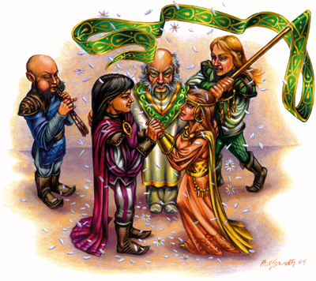

|
侏儒的生活
尽管侏儒发现在自己人中间探讨复杂的话题比较简单，但是想对一个外人解释清成为一个侏儒意味着什么却非常困难，极少有人有耐心、相应的教育背景和参考材料来理解这些解释，然而生活中的某些方面在各个文化中都是共通的，这些方面如何被看待如何被融合就定义了一个社会的成员构成及其他，因此解释清侏儒如此对待这些方面就能对侏儒的思想倾向有所了解。
艺术和工艺
在最受重视的侏儒教科书之一的《真理之美》中有一句任何工场中的侏儒学徒所终生不忘的话“艺术是一种语言，真理通过它向我们倾诉”，如果对真理的探求在侏儒文明中非常普遍（或如其他曾经获得的任何东西一样接近于普遍），那么这句格言就如同我们希望看到的一样成为了侏儒对艺术的看法的抽象和概括。
追寻艺术之路－可以是音乐、戏剧、写作、舞蹈或视觉艺术－被认为是对侏儒的最高召唤，几乎每个侏儒（甚至那些不是艺术家的侏儒）都有着创造的激情，在他们的空闲时间就会修修补补，反而那些没有类似计划的人才是反常的，几乎所有侏儒都拥有某种创造性的技能，即使那可能不过是削削木头而已。
有另一个可以接受的选择，如果一个侏儒既没有时间也没有艺术方面的兴趣，那么他可以赞助其他人研究艺术。几乎在侏儒土地上的所有学校都是基于艺术的（例如音乐学院）或拥有艺术方面的某项重要课程，大多数侏儒在完成自己的早起教育之后，都可以读懂乐谱并演奏至少一种乐器，即使他们在自己的余生再也没有回到艺术这条路上来。
艺术被认为是一种沉思和幻想的行为，一种近乎神圣的行为，尽管在进行自己所选择的创作时极少有人对加尔・闪金（侏儒的主神）有任何形式的贡献，但是艺术依然被当作对真理的虔诚追求而收到尊敬，发明创造也被认为是一种艺术形式，受到相同程度的尊重。
扮演提示：你的侏儒角色是否拥有某种艺术追求、还是在资助其他人，亦或彻底摒弃了侏儒社会的这一传统？如果他在追寻艺术之路的话他更喜欢哪种艺术形式？他在资助谁？是用通过向那个艺术家购买其作品的方式还是用直接向其捐献来资助他的研究的方式呢？
技术和魔法
技术和魔法被认为是艺术的不同方面，但是对于大多数侏儒来说科学却是个不存在的概念，发明家被认为是艺术家，而非科学家，炼金术士因自己的才能也受到高度敬仰，尽管很多炼金术士的发明太过深奥以至于无法在主流的侏儒社会中流行开来。
魔法也被认为是一门艺术，但是跟其他普通的研究相比也没什么大不了，侏儒天生的魔法能力使得魔法研究在大众眼中成为了比较次等的东西，他们有句格言“通晓孕育轻视”，这句话用在这里再适合不过了。魔法与大多数信仰Gelf Darkhearth（侏儒主神加尔・闪金的兄弟）的侏儒紧密联系在一起，因为Gelf Darkhearth一直希望用幻想之海淹没世间所有的真理，因此因兴趣而研究魔法成为了一个不那么受欢迎的选择。
当魔法与另一职业相关联时则被认为是最好的，比如吟游诗人音乐和炼金术发明，一个因确实要用法术的侏儒（例如制作服装或室内装饰）要比一个因兴趣而专精法术的冒险者或法师要光明得多。尽管所有艺术都被认定是通向真理的，但是大多数侏儒都怀疑魔法的短暂性又能有什么内容可言。
扮演提示：你的侏儒角色对魔法有什么看法呢？如果他是从事魔法职业的人，他是否认为魔法被不公正地冠以恶劣的名声呢，亦或他是否努力通过正确运用魔法来令自己的技能变得“诚实”呢？他是不是发明家？他如何看待自己这种艺术方面或实用方面的职业呢？在他的研究中他发现了“真理”的哪些启示呢？
爱
侏儒把爱当作宇宙间的奥秘之一－是灵感之源和真理的实质，对爱的追求是大众娱乐，不管其目标是为了厮守终生还是为了短暂的灵感，在故事和歌曲中对父母、朋友、同胞和爱人的爱被高度评价和赞扬，这形成了高度浪漫和自由的看法，婚外恋被认为可以接受，甚至得到默默鼓励，但是故意从事这种注定会对其他人造成伤害的行为会被认为是不负责任。
侏儒从不安排婚姻，他们认为婚姻是一种只有加尔・闪金可以宣布的神圣结合，它把一个侏儒终生交给另一个侏儒，当然加尔・闪金也不是无缘无故就被称作“恶作剧者”的，那些不成功或不幸福的婚姻都被认为是他的恶作剧，也是侏儒喜剧的一个主旋律。
为了避免成为这种延续终生的恶作剧的牺牲品，侏儒通常会经过很长时间才决定婚事，持续十年的求爱在这些长寿的人中并不罕见，还有另外一种办法，就是通过媒人来安排婚礼（假定这个专业媒人将知道这两个侏儒何时算是彼此适合了），不过当事人没有义务做除了约会之外的事。

侏儒的婚礼是快乐的事情，庆典将持续一周，这段时间的每个清晨，都会举行庆典的一部分，以介绍作为一对好夫妇所具有的不同方面：医师、朋友、爱人、管理者、关爱者、伙伴和竞争对手（鬼左：意思是指夫妻间的各种关系，他们彼此是对方的医师、朋友。。。。等等），这部分过后是整天的欢庆和盛宴，充满了游戏、竞赛、舞蹈和其他形式的娱乐，戏剧和音乐会通常也是其中的一部分，在庆典结束时，小两口通常会搬到其中一家去居住，不过加入一个工场、建立一个新家或一同出发冒险也是有可能的。
当然，这种浪漫爱情的结晶之一就是孩子，作为一个长寿的种族，侏儒的出生率很低，通常每五到十年不过超过有一例，每名儿童都被高度重视，前二十年会由他的大家庭进行抚养，之后他会被送到学校学习手艺、贸易或艺术，很多学生都被送到其他城镇跟自己的导师学习，不过依然有些学生（通常是中产阶级）留在家中，在附近的走读学校上学。侏儒儿童以这种方式形成了广泛的联系，使得不同的定居区之间关系变得密切，不论它们相距多远。
当侏儒成年并完成学业时，他就要决定是返回家乡与家人一起生活还是旅行到一个新的地方开创自己的事业，一些侏儒在外面的世界里冒险，但是却罕有侏儒会永久地定居在那里。
扮演提示：你的侏儒角色怎么看待爱情呢？在家或外地的时候他会否拥有一个浪漫的想法（甚至不止一个）呢？他是个花花公子（鬼左：如果是女性，请自行定义，柴柴柴）还是衷心于某人希望与她白头偕老呢？他四处卖弄风情还是希望寻找自己的真爱呢？他是否有孩子？是否将来打算生个孩子呢？
战斗训练的侏儒
大体上，侏儒蔑视无谓的暴力，但是这并不意味着他们就是不抵抗主义者或无能之辈，他们的战斗力非常强大，更适合的说法是侏儒是个爱好和平的种族，只有当交涉的手段无法实现时才会选择战斗。
侏儒很少对外宣战，甚至当理由充分时也是如此，他们没有常备军队，大多数情况下只拥有少有指挥的民兵，侏儒的通常战术是游击战和一对一，商人领主会让守卫与商队同行，以进行保护工作，但是即使是他们也不充当全职的军队。可以召集一只军队的中央权威是不存在的，即使多名训练有素的人也无法组织起来形成这种权威，相反，侏儒通常会派遣专家在其他的军队中担当斥候或施法者，或者利用自己的发明和炼金物品从事后勤工作。
侏儒文明的信仰体系仅仅将战争视为巨大的浪费，荣耀来自成功，而非无意义的破坏，随着时间流逝，大部分侏儒的同盟已经接受了他们的这种观点（尽管可能无法理解），并对侏儒在必要时期给他们提供的莫大帮助表示感激。
扮演提示：你的侏儒角色如何看待暴力呢？他是否随时准备争吵但是却拒绝流血行为呢？他战斗的时候是否卑鄙下流并会很快完结战斗呢？他是否认为在危险的世界中的个人暴力与大规模的流血战争有所不同呢？
死亡
当一个侏儒死去时，他的去世既被认为是不可避免的事情，也被认为是巨大的悲剧，侏儒相信有死后的生活，但是他们也坚持死者需要依靠热爱他的人的回忆和他流传给后世的发明来生活在死后的世界里。当他死去时，人体本质的一部分就从他身体中游离出来，融合到世界的生命本质中，这部分－它要比传送到位于Twin Paradises of Bytopia中的加尔的国度的另外一部分更令侏儒感兴趣－不会保留这个侏儒的任何思想和精神，当一个新的侏儒诞生时再以全新的凡人形态出现。
因此，侏儒的葬礼是非常忧郁的，如同婚礼一样葬礼也会维持数天，只不过不再是庆典，取而代之的是严肃、阴郁的行为－这与侏儒典型的愉快行为形成鲜明对比，每一天，认识死者的人都会发表演讲、用音乐进行追悼或赞颂死者的生平，他的工作和发明都会进行展示，以表彰他的创造性和智慧，对于那些并非艺术家的侏儒，热爱他的人会发表演讲来展示他慷慨的行为、敬重他人的思想或乐于助人的性情，在典礼的最后一天，死者将会被火化，骨灰被密封到容器中，然后骨灰坛要么转交给死者的亲人保管要么埋葬在侏儒定居区之外。
丧失亲人的侏儒至多服丧五年，在此期间，他们的亲属会尽可能地支持他们，让他们全身心体会自己所失去的东西，用艺术来展示它们或通过旅行来治愈伤痕。黑色是典型的服丧颜色，服丧中的侏儒只会穿戴这种颜色的服饰，当服丧结束时，他们将会被鼓励尽可能地重新回复从前的生活方式，包括继续开展一场新的爱情。丧失亲人的侏儒通常在整整五年后都不会再感到悲伤，甚至有些只服丧几个月，然而，如果服丧五年以上则会被认为是严重失调的迹象，此时，大多数朋友和家庭都会干涉进来来帮助他重拾正常人的生活方式。
扮演提示：你的侏儒角色对死后的生活怎么看呢？这种态度对他对正常世界的看法和个人行为有何影响呢？他是否希望在这个世界里扬名呢？如果是，又是以何种方法呢？有没有他亲近的人去世呢？如果另一个PC死了，他会不会给死者一个侏儒式的葬礼呢？如果其他人更没有进行很久的服丧他是否会看不起他们呢？亦或他自己就会很快地摆脱悲痛继续前行呢？ |